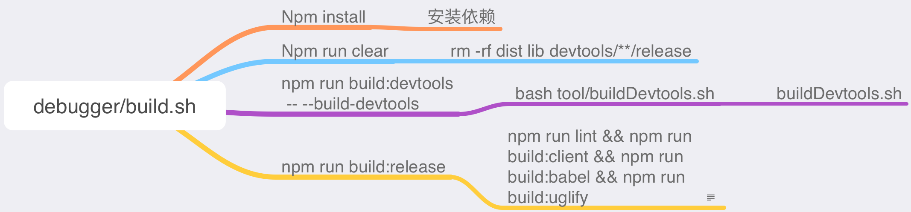
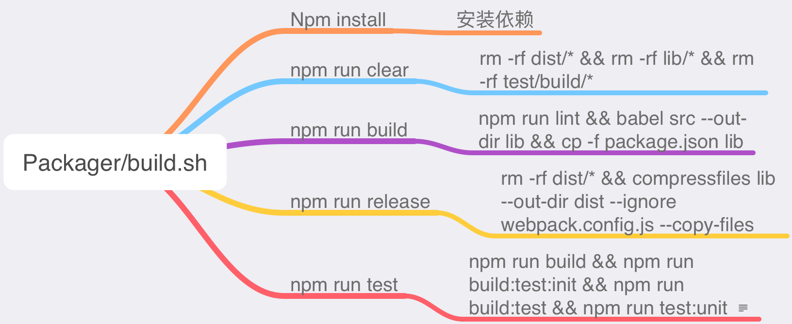
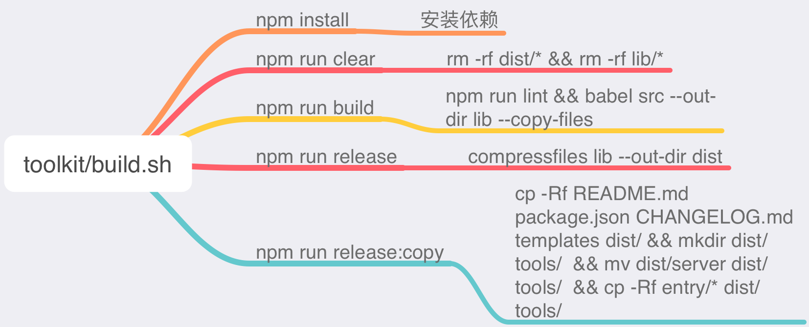
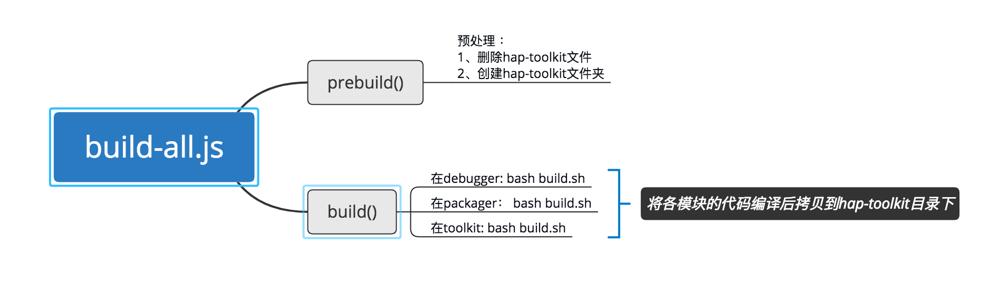
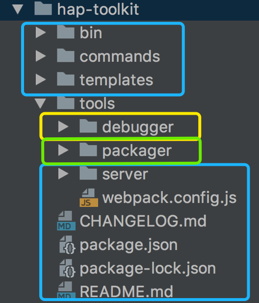

打包hap-toolkit工具
进入tools/toolkit目录：
执行命令： node build-all.js "../debugger" "../packager" "../toolkit"
Bash build.sh
Build.sh 主要完成的事情：
- eslint代码检查
- bable: es6转es5
- uglify: 压缩代码（压缩到dist目录）




项目拷贝

蓝色：toolkit中的内容 黄色：debugger中的内容 绿色: packager中的内容